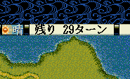
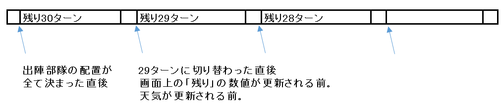

void カスタム::On_残りターン変更《戦争画面》(int 残りターン数) {
}

その日の天候へと変化する「直前」にこのイベントハンドラは実行される。
よってこのイベントハンドラ内でGet_天気()した場合は、前日の天気情報となる。

void カスタム::On_残りターン変更《戦争画面》(int 残りターン数) {
/*
毎ターン、出陣している全武将の兵数が１増える。
*/
// 現在の戦域全域を対象として出陣している武将番号配列用のリストを得る。
番号リスト型 blist = Get_出陣中の武将番号リスト【配列用】();
// 全ての戦争画面で出陣中の武将に対して
for each ( int iBushouID in blist ) {
// 兵数がまだあるならば、そして、その武将が持つべき最大兵数より少ないならば、兵数を１増やす
if ( 0 < p武将情報[iBushouID].兵数 && p武将情報[iBushouID].兵数 < Get_武将最大兵数(iBushouID) ) {
p武将情報[iBushouID].兵数++;
}
}
}
int iAttackGundanID = -1;
int iDefendGundanID = -1;
void カスタム::On_戦争開始(戦争開始パラメタ型 パラメタ) {
// 攻撃側の軍団と守備側の軍団を控えておく
iAttackGundanID = パラメタ.攻撃側軍団【軍団番号】-1;
iDefendGundanID = パラメタ.守備側軍団【軍団番号】-1;
}
void カスタム::On_残りターン変更《戦争画面》(int 残りターン数) {
/*
３ターンに一度敵・味方の武将が話す。
*/
if ( 残りターン数 < 30 ) {
if ( 残りターン数 % 3 == 0 ) {
// 現在表示中のマップに敵味方(援軍除く)が少なくとも1人ずついるかどうかチェック
int iAttackBushouID = -1; // 攻撃側話者武将
int iDefendBushouID = -1; // 守備側話者武将
番号リスト型 blist = Get_出陣中の武将番号リスト【配列用】《表示中マップ》();
srand(timeGetTime()); // random_shuffleには必要。
random_shuffle( blist.begin(), blist.end() ); // ランダムシャッフル
for each ( int iBushouID in blist ) {
// 攻撃側話者武将が未設定で、かつ、この武将の大名勢力が、攻撃側軍団の大名勢力と等しい
if ( iAttackBushouID == -1 && (p武将情報[iBushouID].所属大名【大名番号】== p軍団情報[iAttackGundanID].所属大名【大名番号】) ) {
iAttackBushouID = iBushouID; // 攻撃側話者に設定
// 守備側話者武将が未設定で、かつ、この武将の大名勢力が、守備側側軍団の大名勢力と等しい
} else if ( iDefendBushouID == -1 && (p武将情報[iBushouID].所属大名【大名番号】== p軍団情報[iDefendGundanID].所属大名【大名番号】) ) {
iDefendBushouID = iBushouID; // 守備側話者に設定
}
}
// 話者が2人ともそろった
if ( 0 <= iAttackBushouID && iAttackBushouID < 最大数::武将情報::配列数 &&
0 <= iDefendBushouID && iDefendBushouID < 最大数::武将情報::配列数 ) {
// どちらが噴出の左上を使うか、武将同士のユニットのポジションを考慮する
ヘックス位置型 posA,posD;
if ( Is_野戦中() ) {
posA = Get_武将の野戦ヘックス位置(iAttackBushouID);
posD = Get_武将の野戦ヘックス位置(iDefendBushouID);
// 実際にはここが真になることはない、残りターン変更はかならず(誰一人居なくとも)野戦フィールドに戻ってから行われるため。
} else if ( Is_攻城戦中() ) {
posA = Get_武将の攻城戦ヘックス位置(iAttackBushouID);
posD = Get_武将の攻城戦ヘックス位置(iDefendBushouID);
}
// ユニットのＹが同じ時は、Ｘの位置関係で
if ( posA.Ｙ == posD.Ｙ && posA.Ｘ < posD.Ｘ ) {
噴出ダイアログ《通常・左上》開始( iAttackBushouID, "億したか"+Get_名前(iDefendBushouID)+"！\x0A"+"そんなことでは\x0A城は守れぬぞ" );
噴出ダイアログ《通常・右下》開始( iDefendBushouID, "黙れ"+Get_名前(iAttackBushouID)+"！\x0A"+"口ではなく\x0A力で物を言うがよい" );
噴出ダイアログ《通常・左上》終了();
噴出ダイアログ《通常・右下》終了();
// ユニットのＹが攻撃側が小さいなら、攻撃側が左上を使う （Ｙが大きいほど、画面の下側）
} else if ( posA.Ｙ < posD.Ｙ ) {
噴出ダイアログ《通常・左上》開始( iAttackBushouID, "億したか"+Get_名前(iDefendBushouID)+"！\x0A"+"そんなことでは\x0A城は守れぬぞ" );
噴出ダイアログ《通常・右下》開始( iDefendBushouID, "黙れ"+Get_名前(iAttackBushouID)+"！\x0A"+"口ではなく\x0A力で物を言うがよい" );
噴出ダイアログ《通常・左上》終了();
噴出ダイアログ《通常・右下》終了();
// それ以外は攻撃側が右下を使う
} else {
噴出ダイアログ《通常・右下》開始( iAttackBushouID, "億したか"+Get_名前(iDefendBushouID)+"！\x0A"+"そんなことでは\x0A城は守れぬぞ" );
噴出ダイアログ《通常・左上》開始( iDefendBushouID, "黙れ"+Get_名前(iAttackBushouID)+"！\x0A"+"口ではなく\x0A力で物を言うがよい" );
噴出ダイアログ《通常・右下》終了();
噴出ダイアログ《通常・左上》終了();
}
}
}
}
}